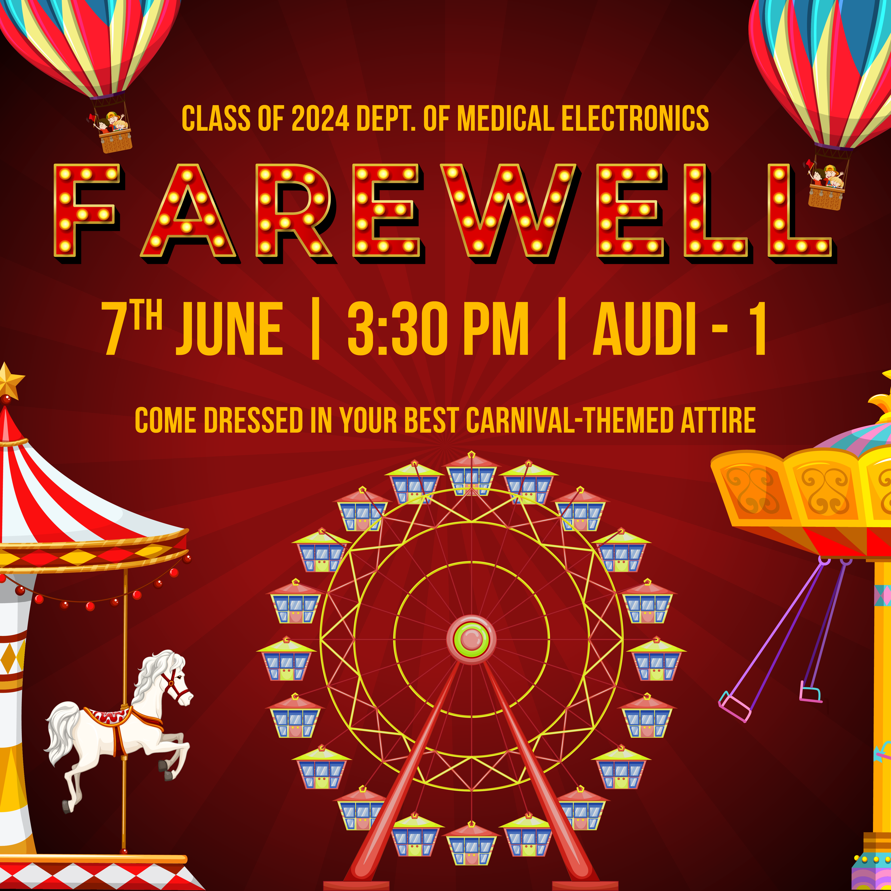
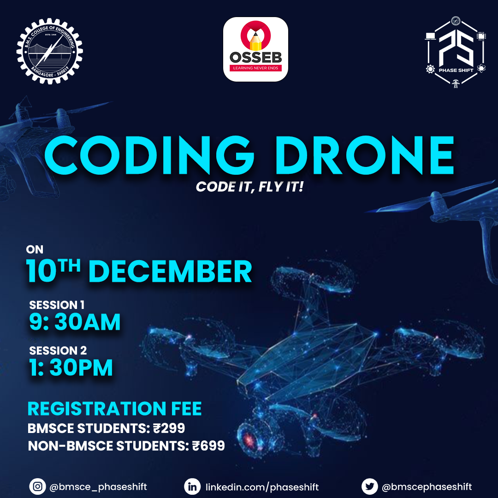
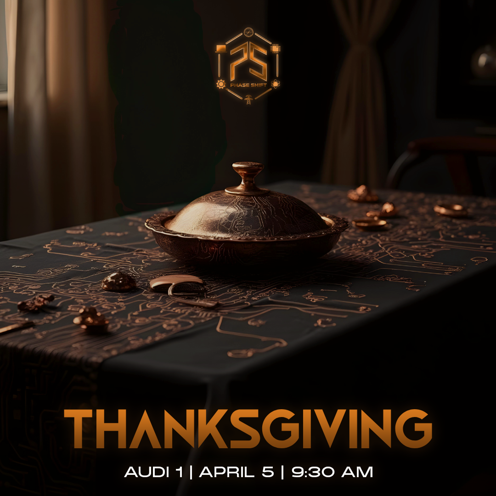
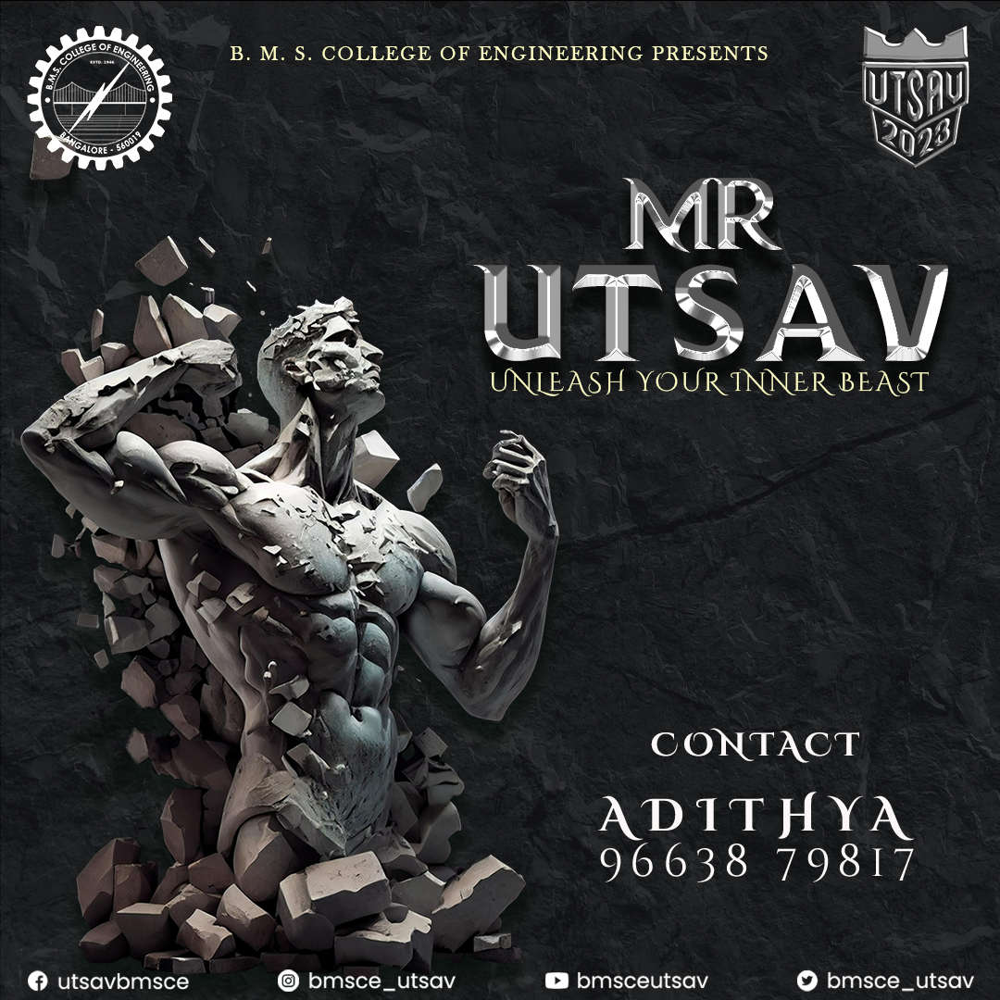
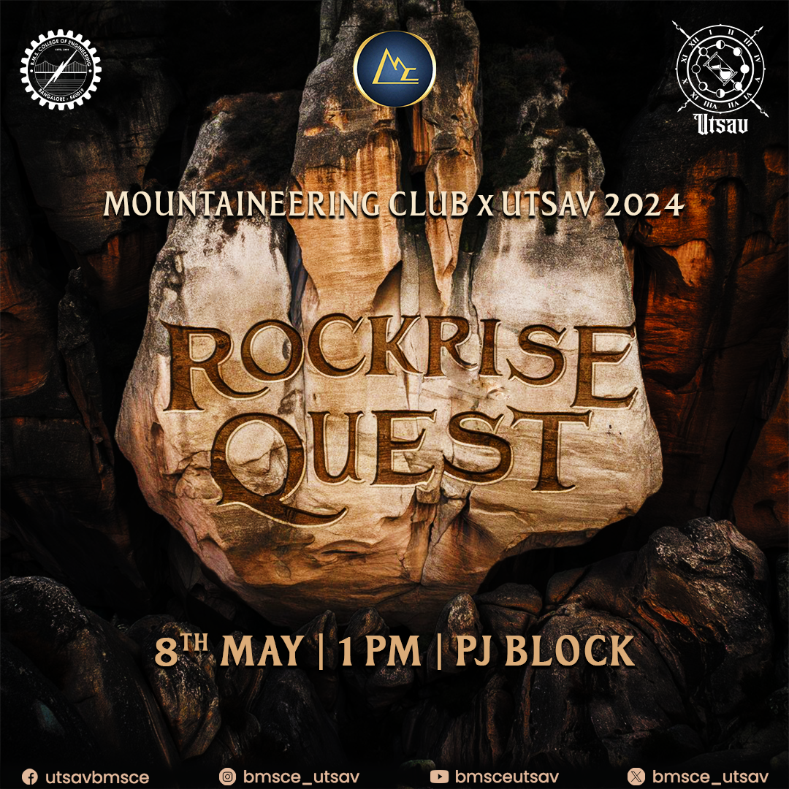

Lakshmi
Siddaveer
Selected work
Three shipped or in-progress projects. Hover a card to see the domain and role, click to open the full write-up.
Selected graphic design work
A continuous scroll of poster design and brand collateral.

Farewell 2024
Event Branding
Eco Prayana Initiative
Social Media Design
Coding Drone
Poster Design
Healthcare Startup Pitch
Brand Collateral
Thanksgiving
Social Media & Event
Mr Utsav
Poster Design
Rockrise Quest
Social Media CampaignFAQs
The questions I actually get asked, answered straight.
Let's Connect
Reach out via email or connect across social channels.